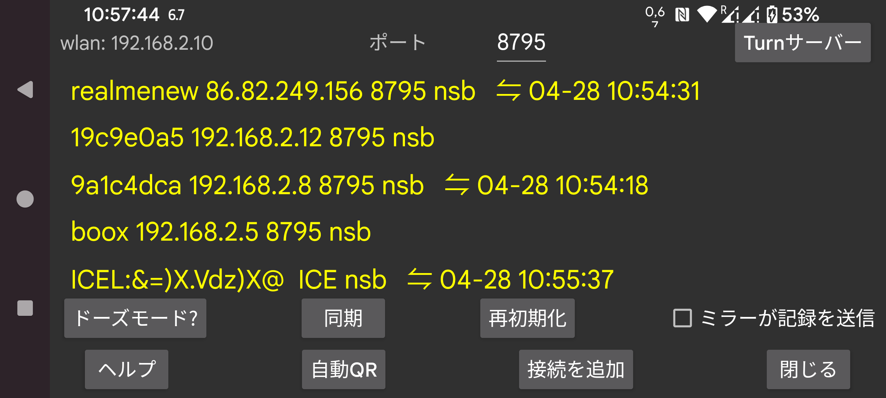

ar be de es fr hi it ja nl pl pt ru sv tr uk uz zh en
別の端末にデータを送信したり、別の端末からデータを受信したりします。Juggluco を実行している Android 端末に接続して、ここと同じ方法でデータを表示できます。スキャンデータを受信した後、ミラー端末は Bluetooth 経由でセンサーと通信することもできます。1 つの端末のみがセンサーと通信するようにするため、ストリーム値が IP/TCP 経由で到着すると「左メニュー → センサー → Bluetooth を使用」が自動的にオフになります。
この画面で、wlan の後にこの端末のローカル wlan IP が表示されます。これを、ホームネットワーク上で接続する別の端末で指定する必要があります(リモート接続の場合はモデム)。
Port の後で、このアプリが接続を待ち受ける TCP ポートを変更できます。
接続を追加 をクリックすると、どのホストとどのように接続するかを指定できます。
Android では信頼できるネットワーク接続はあらゆる種類のバッテリー最適化やバックグラウンド制限により中断されます。ドーズモードを押すと、それを変更するのに役立ちます。
Juggluco がミラーアプリとして機能している場合(Juggluco を実行している別の端末から血糖値を受信)、アラームを押して、低血糖アラームと高血糖アラームおよび関連する通知を指定できるダイアログを開けます。
ミラーが記録を送信: このアプリが別の端末で動作しているこのアプリから薬、食事、運動データの記録を受信する場合、ここで同じ情報を追加または変更すべきではありません。これをチェックすると追加・変更が不可能になります。
同期は、利用可能な場合に新しいデータを接続された端末に送信するか、新しいデータを要求します。
再初期化: 既存の接続を閉じて新しい接続を作成します。
AutoQR: このスマートフォンから別のスマートフォン上の Juggluco にすべてのデータを送信する接続を生成します。もう一方のスマートフォンは左メニュー → 写真で QR コードをスキャンする必要があります。
Wifi (WearOS のみ): 設定されていない場合、バッテリー寿命を保つため WearOS によって一定時間後に WIFI が自動的にオフになり、Juggluco はスマートフォンとウォッチ間の接続に Bluetooth を使用するように切り替わります。オンの場合、WearOS に WIFI を維持するよう要求し、WIFI がオフになるまでに時間がかかりますが、それでもオフになることがあります。このオプションは通常必要ではなく、WearOS の作成者は WIFI をオンにするとバッテリー使用量が大幅に増加すると考えています。
既存の接続が一覧で表示され、ラベル、IP ポート、最後の同期成功の月、日、時刻が表示されます。
接続の使用方法は次のように略されます:
n: 記録 (numbers)
s: スキャン
b: ストリーム (bluetooth)
r: 受信
ミラー接続の詳細については、「接続を追加」のヘルプを読み、https://www.juggluco.nl/Juggluco/index.html#mirror を参照してください。
Android エミュレーター(例: Genymotion)を使って Windows、Macintosh、Linux コンピューター上で Android 版の Juggluco アプリを実行できます。Linux(例えば MS Windows 上の Ubuntu)を使用する場合は、Waydroid も使用できます。エミュレーター上の Juggluco は、センサーに接続された Android スマートフォンからミラー接続経由でデータを受信します。Android Studio Android エミュレーターと Genymotion では、マウスポインターを動かしながら Control キーを押すことでピンチ操作(2 本指を寄せたり離したりする動作)をシミュレートできます。Waydroid はこれをサポートしていませんが、Juggluco 自身が単独でこれを実装しています。